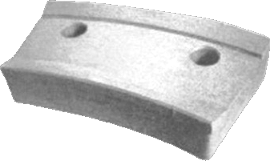
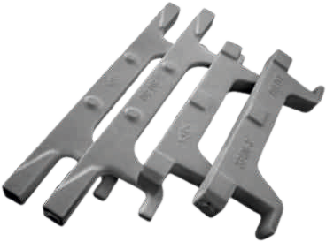

Home / Industries / Cement
Cement
Castings for every stage of the line, from the limestone crusher to the clinker cooler, each specified for the wear, impact and heat it will meet.
A cement line asks two opposite things of its castings. At the front, parts must survive impact and abrasion at ambient temperature. From the preheater onwards, they must hold their shape and resist scaling in hot, dusty gas. We pour both families and specify each part for the stage it works in.
Crushing
Limestone, shale and additives are broken down before grinding. These parts take repeated heavy impact, so toughness comes first and hardness second.

Apron pans and sprockets
- Fails by
- Pan wear and cracking under falling rock
- Usual grade
- Manganese steel, Carbon or low-alloy steel

Hammers and beaters
- Fails by
- Wear at the striking head
- Usual grade
- Manganese steel, Cr-Mo steel

Blow bars
- Fails by
- Edge wear that rounds the striking face
- Usual grade
- Manganese steel, Cr-Mo steel, High-chromium iron
Impact plates
- Fails by
- Wear in the main impact zone
- Usual grade
- Manganese steel, Cr-Mo steel, High-chromium iron

Grinding paths
- Fails by
- Wear that opens the gap to the rotor
- Usual grade
- Cr-Mo steel, High-chromium iron, Manganese steel

Jaw and side plates
- Fails by
- Tooth wear and loss of nip
- Usual grade
- Manganese steel
Raw and cement grinding
Vertical roller mills and ball mills grind raw meal, coal and cement. Wear here is mostly sliding abrasion, so the harder white irons earn their place, with tough steels where the load is carried.

VRM rollers
- Fails by
- Profile wear across the face
- Usual grade
- High-chromium iron, Ni-Hard

Table liners
- Fails by
- Track wear under the rollers
- Usual grade
- High-chromium iron, Ni-Hard

Clamps
- Fails by
- Cracking under load
- Usual grade
- Carbon or low-alloy steel

Mill liners
- Fails by
- Lifter wear that flattens the profile
- Usual grade
- Cr-Mo steel, High-chromium iron, Ni-Hard

Diaphragms and discharge grates
- Fails by
- Slot wear that lets coarse media through
- Usual grade
- Cr-Mo steel, High-chromium iron

Trunnions
- Fails by
- Journal wear and scoring
- Usual grade
- Carbon or low-alloy steel

Mill feed spouts
- Fails by
- Wear where the stream turns
- Usual grade
- High-chromium iron, Cr-Mo steel
Preheater
Raw meal meets hot kiln gas in the cyclone tower. Castings must keep their shape and resist oxidation and sulphur attack in the lower, hottest stages.

Kiln ends
At the kiln inlet and outlet, castings protect the shell and hold the refractory. A failure here stops the whole plant, so we design for life between planned shutdowns.

Clinker cooler
Grate plates and bars carry and move red-hot clinker under constant abrasion. The right alloy for each zone and a design that resists warping decide how long a grate lasts.

Grate and cooler plates
- Fails by
- Burn-through and oxidation in the hot zone
- Usual grade
- Heat-resistant steel, Carbon or low-alloy steel

Grate bars and cross bars
- Fails by
- Abrasion of the conveying faces
- Usual grade
- Heat-resistant steel, Carbon or low-alloy steel

Cooler conveying elements
- Fails by
- Abrasion of the pushing faces
- Usual grade
- Heat-resistant steel, Carbon or low-alloy steel
Hammers and beaters
- Fails by
- Wear at the striking head
- Usual grade
- Manganese steel, Cr-Mo steel
Why cement plants choose us
- Both families, one foundryWear-resistant and heat-resistant alloys poured, treated and tested in the same plant.
- Grade set by dutyWe ask where the part runs and what it meets before we recommend a grade.
- Ready for the shutdownMore than 10,000 patterns on file. Parts machined and fit-checked before dispatch.
Have a casting problem? Send it to us
A drawing, photographs of the worn part or just the equipment model: any of them is enough to start. Our metallurgists recommend the grade if you don’t know it.